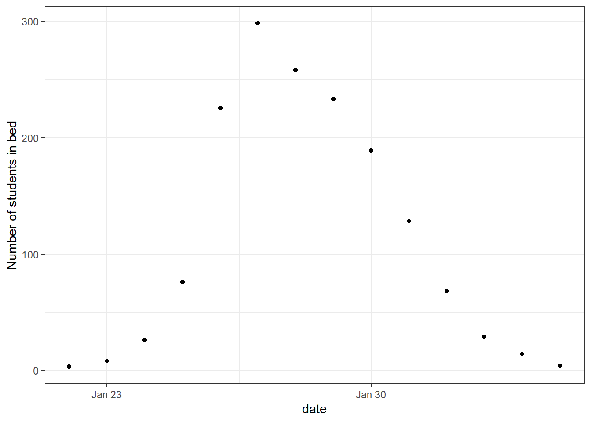
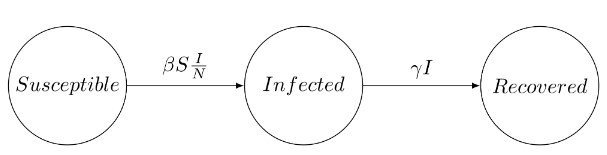

library(outbreaks)
library(tidyverse)
library(truncnorm)
library(rstan)
library(gridExtra)
library(bayesplot)
library(adjustr)
rstan_options(auto_write = TRUE)
options(mc.cores = parallel::detectCores())Bayesian approach to disease outbreaks
Bayesian
R
Stan
In this project we will consider a Bayesian approach to modelling disease outbreaks inspired by this Stan case study. We will do this using a Susceptible-Infected-Recovered (SIR) model. The main objective is to estimate epidemiological parameters of interest.
Data
The data consists of the daily number of students in bed, spanning over a time interval of 14 days. There were 763 male students who were mostly full boarders and 512 of them became ill. The outbreak lasted from the 22nd of January to the 4th of February. It is reported that one infected boy started the epidemic, which spread rapidly in the relatively closed community of the boarding school.
We start by plotting the data.
head(influenza_england_1978_school) date in_bed convalescent
1 1978-01-22 3 0
2 1978-01-23 8 0
3 1978-01-24 26 0
4 1978-01-25 76 0
5 1978-01-26 225 9
6 1978-01-27 298 17theme_set(theme_bw())
ggplot(data = influenza_england_1978_school) +
geom_point(mapping = aes(x = date, y = in_bed)) +
labs(y = "Number of students in bed")
SIR model
The Susceptible-Infected-Recovered (SIR) model is standard for disease transmission. It splits the population into three categories: the susceptible, the infected and the recovered. When a susceptible individual comes into contact with an infectious individual, the former can become infected for some time, and then recover and become immune. The dynamics can be summarized graphically:

The SIR system can be expressed by the following set of differential equations: \[\begin{aligned} \frac{dS}{dt}&=-\beta S\frac{I}{N} \\ \frac{dI}{dt}&=\beta S \frac{I}{N}-\gamma I \\ \frac{dR}{dt}&=\gamma I, \end{aligned}\] where
- \(S(t)\) is the number of susceptible people (no immunity),
- \(I(t)\) is the number of infected people (infectious),
- \(R(t)\) is the number of recovered people (immune),
- \(\beta\) is the constant rate at which susceptible individuals become, infected through contact with infectious individuals,
- \(\gamma\) is the constant recovery rate of infected individuals.
The SIR model holds under the following assumptions:
- The total population \(N=S+I+R\) remains constant,
- Recovered individuals remain immune,
- The infection rate \(\beta\) and \(\gamma\) are constant,
- Individuals meet any other individual uniformly at random and recovery time follows an exponential distribution with mean \(1/\gamma\).
In our case we have the disease started with \(1\) infected which gives us the initial conditions \(I(0)=1, S(0)=N-1=762\), and \(R(0)=0\).
Model
We will do a Bayesian approach. That is, is a Bayesian framework our posterior distribution \(p(\theta \vert \mathcal{Y})\) is given by \[p(\theta \vert \mathcal{Y}) \propto p(\mathcal{Y} \vert \theta)p(\theta).\]
So we need to specify the sampling distribution \(p(\mathcal{Y} \vert \theta)\) and the prior distribution \(p(\theta)\).
Sampling distribution
Given our parameters and initial conditions we can find the number of infected students, \(I_{\text{ODE}}(t)\). We want to link this solution to the observed data, i.e. the number of students in bed, \(I_{\text{obs}}(t)\). That is, our observed is a noisy estimate of the true number of infected students. To allow for possible overdispersion we choose to sample from a negative binomial distribution. \[I_{\text{obs}}(t) \sim \text{NegBin}(I_{\text{ODE}}(t), \phi)\] So, we have \(p(\mathcal{Y}\vert \theta)\) with \(\theta=(\beta,\gamma,\phi)\).
Prior distribution
We select a prior for each of the three parameters \(\beta,\gamma\), and \(\phi\). For the rate of which susceptible people become infected, \(\beta\), we use a normal distribution truncated at \(0\). Using domain knowledge a reasonable choice is to have the mean be \(2\) and \(P(\beta>3)=0.2\). To do this we will need code to numerically solve for these parameters.
Click here to see code for solving for parameters in truncated normal
I made the function solve_truncated_normal in my package solvetruncated, which can be downloaded by running the following code:
# install.packages("devtools")
devtools::install_github("BjarkeHautop/solvetruncated")We can then use the function to solve for the parameters. For example, to solve for the parameters of \[X \sim \text{Normal}^+(\mu, \sigma)\] with desired mean \(E[X]=0.5\) and \(P(X\leq 0.75)=0.8\).
library(solvetruncated)
solve_truncated_normal(desired_mean = 0.5,
x_value = 0.75,
desired_prob = 0.8,
a = 0,
b = Inf)$mu
[1] 0.4208603
$sigma
[1] 0.3543778Now we can solve for the parameters for \(\beta\) numerically.
solve_truncated_normal(desired_mean = 2, x_value = 3, desired_prob = 1 - 0.2)$mu
[1] 1.683441
$sigma
[1] 1.417511Thus, \[\beta \sim \mathrm{Normal}^+(1.68,\; 1.42^2).\]
For \(\gamma\) we will also use truncated normal distribution, where we know that typically an influenza lasts a few days. In particular, we want the mean of \(\gamma\) to be \(0.5\), so the average length of the infectious disease is \(1/\gamma=1/0.5=2\). We also want the recovery time to be more than \(1\) day with probability \(0.9\) (that is \(P(\gamma\leq 1)=0.9\)). We again solve for the parameters numerically.
solve_truncated_normal(desired_mean = 0.5, x_value = 1, desired_prob = 0.9)$mu
[1] 0.1771892
$sigma
[1] 0.5375236Thus, \[\gamma \sim \mathrm{Normal}^+(0.18, \; 0.54^2),\]
For the overdispersion parameter \(\phi\) we will use a generic prior on \(1/\sqrt{\phi}\) as recommended by Stan here, that is \[1/\sqrt{\phi} \sim \mathrm{Normal}^+(0,\; 1^2).\]
Implementing model in Stan
Quantities
In infectious disease models, a key parameter of interest is often the basic reproduction number, \(R_0\). \(R_0\) represents the average number of secondary infections generated by a single infected individual in a completely susceptible population over the entire infectious period. \(R_0>1\) indicates a sustainable infection, which can lead to a major outbreak, while \(R_0<1\) suggests that the infection will die out. Bayesian inference allows us to construct a posterior distribution for \(p(R_0\vert \mathcal{Y})\).
The other quantities we will track is recovery time and predicted number of cases.
Coding the model in Stan
Click here to see details about how to code the model in Stan
The full code for our Stan model is
// Code for ODE
functions {
vector sir(real t, vector y, array[] real theta,
array[] real x_r, array[] int x_i) {
real S = y[1];
real I = y[2];
real R = y[3];
real N = x_i[1];
real beta = theta[1];
real gamma = theta[2];
real dS_dt = -beta * I * S / N;
real dI_dt = beta * I * S / N - gamma * I;
real dR_dt = gamma * I;
// ' transposes our row vector into a column vector
return [dS_dt, dI_dt, dR_dt]';
}
}
data {
int<lower=1> n_days;
vector[3] y0;
array[n_days] real t;
int N;
array [n_days] int cases;
}
// Track status of individuals in SIR model in x
transformed data {
real t0 = 0;
array[0] real x_r;
array[1] int x_i = { N };
}
// Truncated prior using <lower=...>
parameters {
real<lower=0> beta;
real<lower=0> gamma;
real<lower=0> phi_inv_sqrt;
}
transformed parameters{
array[n_days] vector[3] y;
real phi = 1. / (square(phi_inv_sqrt));
{
array[2] real theta;
theta[1] = beta;
theta[2] = gamma;
y = ode_rk45(sir, y0, t0, t, theta, x_r, x_i);
}
}
model {
//priors
beta ~ normal(1.7, 1.4);
gamma ~ normal(0.2, 0.53);
phi_inv_sqrt ~ normal(0, 1);
// sampling distribution
cases ~ neg_binomial_2(y[,2], phi);
}
// Quantities of interest
generated quantities {
real R0 = beta / gamma;
real recovery_time = 1 / gamma;
array[n_days] real pred_cases;
pred_cases = neg_binomial_2_rng(y[,2], phi);
}We now define the model.
model <- stan_model(file = file_path)Running Stan model
We run our model with default options.
cases <- influenza_england_1978_school$in_bed
# total count
total_count <- 763
# times
n_days <- length(cases)
t <- seq(0, n_days, by = 1)
t <- t[-1]
# initial conditions
i0 <- 1
s0 <- total_count - i0
r0 <- 0
y0 <- c(S = s0, I = i0, R = r0)
# data for Stan
data_sir <- list(
n_days = n_days, y0 = y0, t = t, N = total_count,
cases = cases
)
fit_sir_negbin <- stan(
file = file_path,
data = data_sir,
seed = 1405,
)Checking the model
We start by showing summary table of the parameters in our model.
pars <- c("beta", "gamma", "R0", "recovery_time")
print(fit_sir_negbin, pars = pars)Inference for Stan model: anon_model.
4 chains, each with iter=2000; warmup=1000; thin=1;
post-warmup draws per chain=1000, total post-warmup draws=4000.
mean se_mean sd 2.5% 25% 50% 75% 97.5% n_eff Rhat
beta 1.73 0.00 0.05 1.63 1.70 1.73 1.77 1.85 2041 1
gamma 0.54 0.00 0.05 0.45 0.51 0.54 0.57 0.63 2409 1
R0 3.23 0.01 0.29 2.74 3.05 3.22 3.39 3.87 2109 1
recovery_time 1.86 0.00 0.16 1.58 1.76 1.86 1.96 2.20 2394 1
Samples were drawn using NUTS(diag_e) at Thu Sep 26 09:27:11 2024.
For each parameter, n_eff is a crude measure of effective sample size,
and Rhat is the potential scale reduction factor on split chains (at
convergence, Rhat=1).In the summary we also see information about whether to trust the results. We see that \(\widehat{R}=1\) and \(n_\text{eff}\) is large, so it looks good.
We also plot the marginal posterior densities for the 4 Markov Chains and confirm they are in agreement.
stan_dens(fit_sir_negbin, pars = pars, separate_chains = TRUE)
We will check our model by doing posterior predictive checks. That is, we predict the data we would expect based on the model posterior, and we compare it with the actually observed data to see if they are consistent. We do this and add a \(90\%\) credible interval.
smr_pred <- cbind(as.data.frame(summary(
fit_sir_negbin,
pars = "pred_cases",
probs = c(0.05, 0.5, 0.95)
)$summary), t, cases)
colnames(smr_pred) <- make.names(colnames(smr_pred)) # to remove %
ggplot(smr_pred, mapping = aes(x = t)) +
geom_ribbon(aes(ymin = X5., ymax = X95.), fill = "green", alpha = 0.35) +
geom_line(mapping = aes(x = t, y = X50.), color = "blue") +
geom_point(mapping = aes(y = cases)) +
labs(x = "Day", y = "Number of students in bed")
We see that our predictions align well with the observed data.
Prior sensitivity
We will perform prior sensitivity analysis, that is analyzing how much the prior choice affects the posterior. We will use the package adjustr to do this. For \(\beta\) we will try the following other priors:
Mean \(1\) and \(P(\beta)>2=0.2\). This gives us the prior \[\beta \sim \mathrm{Normal}^+(1.6, \; 1.3),\]
Mean \(3\) and \(P(\beta)>4=0.2\). This gives us the prior \[\beta \sim \mathrm{Normal}^+(2.98, \; 1.2),\]
Mean \(4\) and \(P(\beta)>5=0.2\). This gives us the prior \[\beta \sim \mathrm{Normal}^+(4, \; 1.19).\]
Where we again solved for the parameters numerically, as seen below.
solve_truncated_normal(desired_mean = 1, x_value = 2, desired_prob = 1 - 0.2)
solve_truncated_normal(desired_mean = 3, x_value = 4, desired_prob = 1 - 0.2)
solve_truncated_normal(desired_mean = 4, x_value = 5, desired_prob = 1 - 0.2)For \(\gamma\) we will try the following other priors:
Mean \(1\) and \(P(\gamma\leq 1.5)=0.9\). This gives us the prior \[\gamma \sim \mathrm{Normal}^+(1, \; 0.4),\]
Mean \(1/3\) and \(P(\gamma\leq 0.6)=0.9\). This gives us the prior \[\gamma \sim \mathrm{Normal}^+(0.28, \; 0.24),\]
Mean \(1/4\) and \(P(\gamma\leq 0.4)=0.9\). This gives us the prior \[\gamma \sim \mathrm{Normal}^+(0.24, \; 0.12).\]
Now we see how the posterior changes with these different priors. For \(\beta\) this can be done with following code.
spec_beta <- make_spec(beta ~ normal(mu, sd),
mu = c(1.6, 2.98, 4), sd = c(1.3, 1.2, 1.19)
)
adjusted_beta <- adjust_weights(spec_beta, fit_sir_negbin)
summarize(adjusted_beta, mean(beta), var(beta))# A tibble: 4 × 7
mu sd .samp .weights .pareto_k `mean(beta)` `var(beta)`
<dbl> <dbl> <chr> <list> <dbl> <dbl> <dbl>
1 1.6 1.3 beta ~ normal(mu, sd) <dbl> -0.0420 1.73 0.00299
2 2.98 1.2 beta ~ normal(mu, sd) <dbl> 0.115 1.73 0.00299
3 4 1.19 beta ~ normal(mu, sd) <dbl> 0.148 1.73 0.00299
4 NA NA <original model> <dbl> -Inf 1.73 0.00299We see the posterior mean and variance didn’t change for \(\beta\) with those different priors. So the posterior is being dominated by the data, which is a good thing.
We do the same for \(\gamma\).
spec_gamma <- make_spec(beta ~ normal(mu, sd),
mu = c(1, 0.28, 0.24), sd = c(0.4, 0.24, 0.12)
)
adjusted_gamma <- adjust_weights(spec_gamma, fit_sir_negbin)
summarize(adjusted_gamma, mean(gamma), var(gamma))# A tibble: 4 × 7
mu sd .samp .weights .pareto_k `mean(gamma)` `var(gamma)`
<dbl> <dbl> <chr> <list> <dbl> <dbl> <dbl>
1 1 0.4 beta ~ normal(mu, s… <dbl> 0.0440 0.541 0.00205
2 0.28 0.24 beta ~ normal(mu, s… <dbl> 0.465 0.540 0.00198
3 0.24 0.12 beta ~ normal(mu, s… <dbl> 2.02 NA NA
4 NA NA <original model> <dbl> -Inf 0.540 0.00206We see that the posterior mean and variance barely changes for \(\gamma\) with those different priors. So the posterior is being dominated by the data, which is a good thing.
Inference
We show the marginal posterior (with chains combined) below.
posterior <- as.matrix(fit_sir_negbin)
plot_title <- ggtitle(
"Posterior distributions",
"with medians and 90% intervals"
)
mcmc_areas(posterior,
pars = pars,
prob = 0.9
) + plot_title
Of particular interest is that the distribution of the basic reproduction number, \(R_0\), has all the mass way above \(1\), so this infection would be sustainable.
We can also access the true number of infected, which is a latent variable. We again add a \(90\%\) credible interval.
params <- lapply(t, function(i) {
sprintf("y[%s,2]", i)
}) # number of infected for each day
smr_y <- as.data.frame(
summary(
fit_sir_negbin,
pars = params,
probs = c(0.05, 0.5, 0.95)
)$summary
)
colnames(smr_y) <- make.names(colnames(smr_y)) # to remove % in the col names
ggplot(smr_y, mapping = aes(x = t)) +
geom_ribbon(aes(ymin = X5., ymax = X95.), fill = "green", alpha = 0.35) +
geom_line(mapping = aes(x = t, y = X50.), color = "blue") +
labs(x = "Day", y = "Number of infected students")
Conclusion
In this study, we presented a Bayesian approach to modeling disease outbreaks using the Susceptible-Infected-Recovered (SIR) model. This methodology enables the incorporation of domain-specific knowledge about the disease, allowing for the estimation of crucial epidemiological parameters, such as the basic reproduction number,\(R_0\). By leveraging Bayesian inference, we can obtain a probabilistic understanding of these parameters, which provides valuable insights into the uncertainty and variability inherent in the modeling process.
We conducted extensive model validation and robustness checks, including posterior predictive checks and prior sensitivity analyses, to ensure the reliability and robustness of our findings.
In conclusion, the Bayesian SIR model provides a powerful tool for public health officials and researchers, enabling them to make informed decisions based on a comprehensive understanding of disease dynamics. Future work could extend this framework to more complex models and explore its application to different types of infectious diseases.